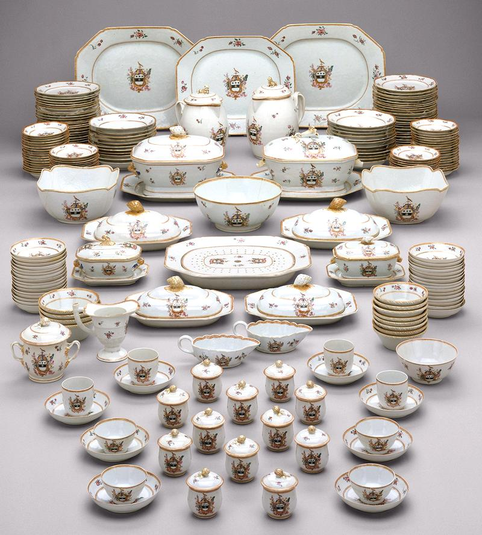

This photo is of Western Formal Tableware made in China in the
late 1800s for export to the United States. It is a display, not a set,
so the counts are very uneven.
Photo by Metropolitan Museum of Art contributed to the Public
Domain and distributed under license Creative Commons CC0 1.0.